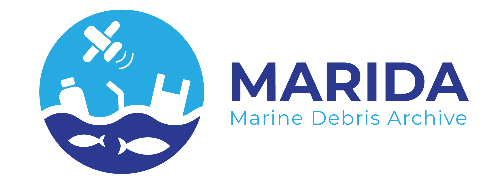
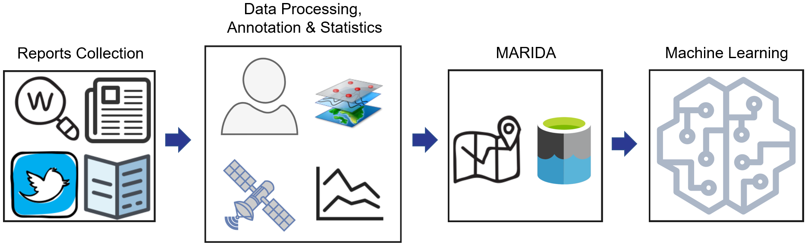

Kikaki K, Kakogeorgiou I, Mikeli P, Raitsos DE, Karantzalos K (2022) MARIDA: A benchmark for Marine Debris detection from Sentinel-2 remote sensing data. PLoS ONE 17(1): e0262247.
https://doi.org/10.1371/journal.pone.0262247


Quick Start Guide
Marine Debris Archive Overview
Categories, Confidence level & Report Analysis
Spectral Signatures Analysis
Spectral Signatures Embedding (2D maps)
Patch Statistics & Train/Val/Test Distribution
Corresponding author Katerina Kikaki at
akikakh@central.ntua.gr
.